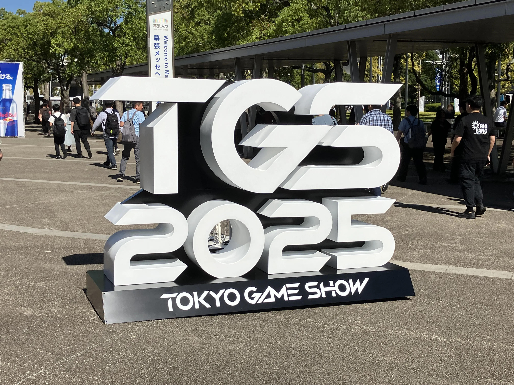
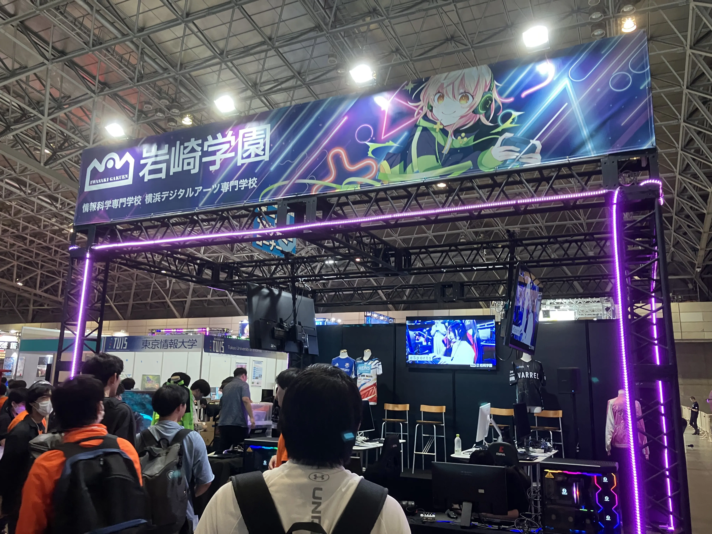
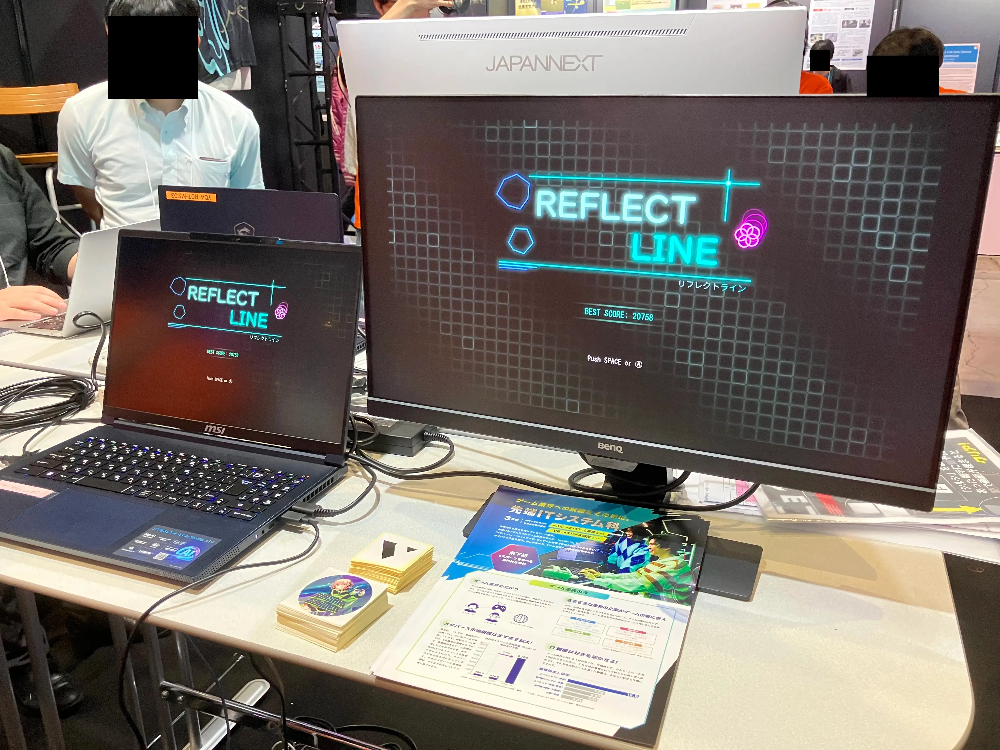
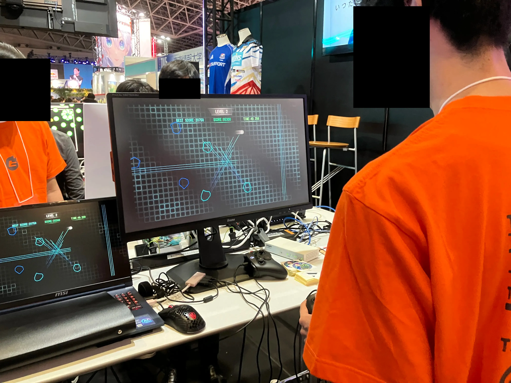

概要

実績


作品展示
Game Pit TOKYO 2026
Game Pit TOKYOにて、東京へ出張し、代表作「REFLECT LINE」を展示しました。

展示終了後は、振り返りとしてレポートを作成しました。
東京ゲームショウ2025
東京ゲームショウにて、学園全体の出展に参加し、代表作「REFLECT LINE」を展示しました。




サークル活動
ゲーム制作サークルに所属しています。
授業外でも先輩・後輩とチームを組み、継続的にチーム開発の経験を積んでいます。


ゲームジャム運営
学内で開催される「ゲームジャム」の運営メンバーとして活動しています。
また、本番ではリードプログラマーとしてチームを率いています。
チーム分けツール開発
重要な役割として、当日ランダムにチームを編成するためのツール開発を担当しました。
運営の技術担当として、当日の進行が円滑に進むよう貢献しました。